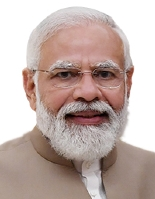

1_Upload_4232.pdf: Detail-1

Narendra Modi
Continues:
Ministry of Personnel Public Grievances and Pensions[Prime Minister]
Department of Atomic Energy[Prime Minister]
Department of Space[Prime Minister]
o-Narendra_Modi.html
Page1/ 5
No Extract|detail_language_generator
Emptytenures|tenure_builder
EmptyNo Extract|details_differ
EmptyofficerIDs|id_assigner_vocab
[{ID: Q1058, name: , method: computed }]No Extract|order_tagger
Emptyorder|table_order_builder
[{name: Narendra Modi continues: [>Ministry of Personnel Public Grievances and Pensions<,>Prime Minister<|>Department of Atomic Energy<,>Prime Minister<|>Department of Space<,>Prime Minister<]relinquishes: []assumes: []}]tables|table_finder
[{0: 0., 1: Shri Narendra Modi, 2: Prime Minister and also in - charge of : Ministry of Personnel , Public Grievances and Pensions ; Department of Atomic Energy ; Department of Space ; All important policy issues ; and All other portfolio not allocated to any Minister . CABINET MINISTERS}]list_items|list_finder2
[{ marker: 0, line: Shri Narendra Modi Prime Minister and also in - charge of : Ministry of Personnel , Public Grievances and Pensions ; Department of Atomic Energy ; Department of Space ; All important policy issues ; and All other portfolio not allocated to any Minister . CABINET MINISTERS]lines|line_finder
Emptynum_marker_angle|rotation_detector
[0.7931527495294777]num_markers|num_marker
[{ text: 0, val: 0 type: 1 }]No Extract|html_generator
Emptyreoriented_angle|orient_pages
[0]page_image|page_image_builder_embedded
[PageImage]meta|meta_writer
[{URL date: 2026-10-16 10:33:43, archive_sha: VY7VBEEBJXXAD6S7F5TEQCRG3KUJX4RF, matched: True }]No Extract|gcv_recognizer
Empty